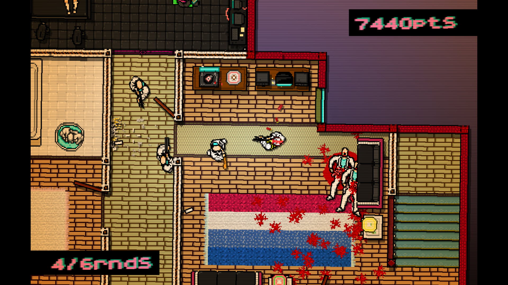
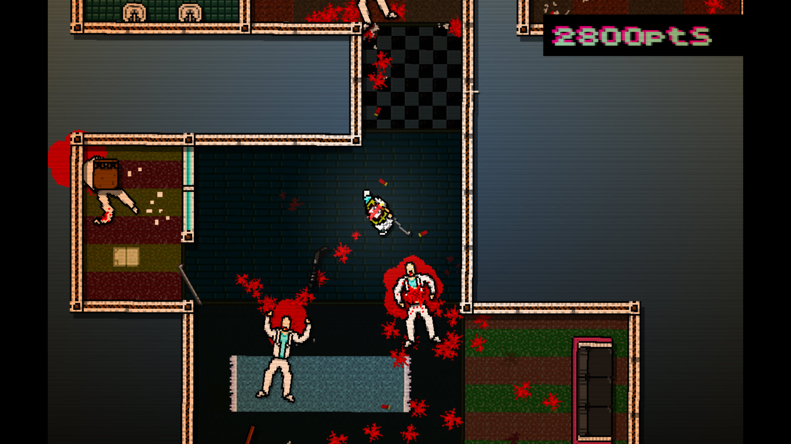
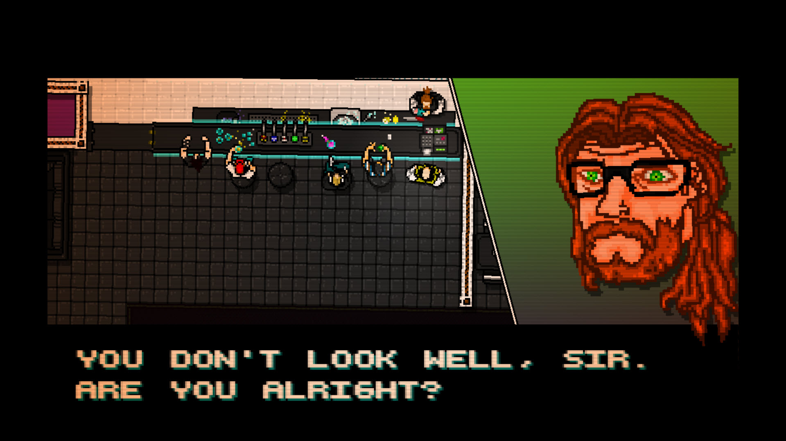

A happy place where I talk about cool things you might enjoy.
This is the page for video game reviews. Games will vary in genre (as I have a wide spectrum of games I enjoy), from role-playing, to action-adventure, to sports. Reviews consist of a simple overview of what the game is, why I like it, and then a few screen shots of the game.
Hotline Miami is a 2D action video game developed by Dennaton Games. Set in 1989 Miami, the plot consists of two protagonists, Jacket and Biker, who have been receiving phone calls instructing them to commit massacres against the local Russian Mafia. The game blends top down perspective with stealth, extreme violence and surreal storytelling, along with a soundtrack and visuals influenced by 1980s culture.
I love this game for several reasons. One, for me, I love fast-paced games, and this game has about as fast-paced of combat that you'll see in a game. Also, the story has a lot of interesting turns that keep you hooked throughout the whole game and the music is spectacular. It's catchy and fits right in with the mood of the game.


